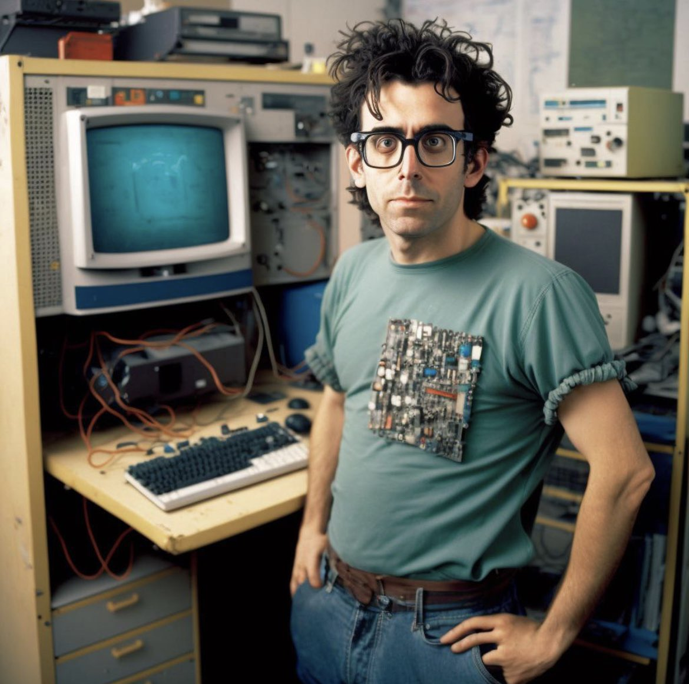
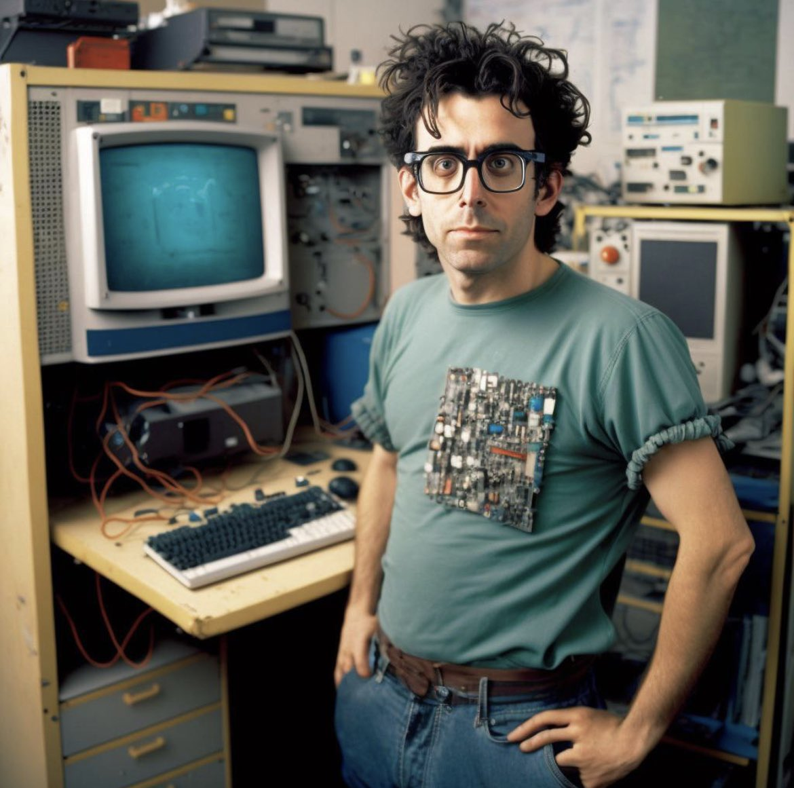

Video de @Fazt Code
Historia de JavaScript
 

Que es Javascript ?
JavaScript es un lenguaje de programación ampliamente utilizado que se utiliza principalmente para crear interactividad en páginas web. A diferencia de HTML y CSS, que se utilizan para definir la estructura y el estilo de una página web, JavaScript agrega dinamismo y funcionalidad a las páginas web al permitir la interacción del usuario, el manejo de eventos, la manipulación del contenido de la página y mucho más.
Un poco de historia
La historia de JavaScript se remonta a principios de la década de 1990, cuando Netscape Communications Corporation estaba desarrollando su navegador web Netscape Navigator. En ese momento, Java estaba ganando popularidad como lenguaje de programación, por lo que Netscape quería incorporar capacidades similares en su navegador. Entonces, en 1995, Brendan Eich, un ingeniero de software de Netscape, creó JavaScript en un tiempo récord de 10 días, inicialmente llamado Mocha y luego renombrado a LiveScript y finalmente a JavaScript por razones de marketing./p>
JavaScript ganó rápidamente popularidad debido a su capacidad para mejorar la experiencia del usuario en páginas web al permitir la creación de elementos interactivos y dinámicos. En 1996, Microsoft lanzó su propia versión del lenguaje llamada JScript, lo que llevó a la estandarización del lenguaje bajo el nombre ECMAScript por parte de Ecma International en 1997. Desde entonces, JavaScript ha evolucionado continuamente con nuevas características y funcionalidades, y se ha convertido en uno de los lenguajes de programación más importantes y ubicuos en el desarrollo web moderno.
JavaScript en la Actualidad
Hoy en día, JavaScript es omnipresente en el desarrollo web, móvil e incluso en el desarrollo de aplicaciones de escritorio. La evolución continua del lenguaje y la comunidad de desarrolladores contribuyen a su crecimiento y adopción en la industria tecnológica. La popularidad de frameworks como React, Vue.js y Angular, así como la expansión de JavaScript en el ámbito de la inteligencia artificial y el Internet de las cosas (IoT), demuestran el papel fundamental que juega en la innovación tecnológica actual.
JavaScript en el Futuro
El futuro de JavaScript es emocionante, con propuestas como ECMAScript 202x que prometen características avanzadas y mejoras en el lenguaje para abordar las necesidades cambiantes de desarrollo de software en la era digital. Se espera que ECMAScript continúe evolucionando para admitir nuevas funcionalidades como la programación asincrónica más fácil, la manipulación avanzada de datos y la mejora de la seguridad en el desarrollo de aplicaciones web y móviles.
Más Info:
- Especificación del lenguaje ECMAScript
- ECMAScript 6 es ya un estándar cerrado
- Tabla de compatibilidad de navegadores con ECMAScript 6
- Historia de ECMA
- ISO/IEC 22275:2018
- Standard ECMA-262: ECMAScript® 2016 Language Specification (en inglés). Consultado el 13 de enero de 2017.
- Eich, Brendan (13 de agosto de 2008). «ECMAScript Harmony». Consultado el 22 de julio de 2015.
- campusMVP (19 de junio de 2015). «ECMAScript 6 es ya un estándar cerrado». Consultado el 22 de julio de 2015.
- Krill, Paul (23 de junio de 2008). «JavaScript creator ponders past, future | Developer World». Consultado el 31 de octubre de 2013.
- Press Release. Web.archive.org. Consultado el 31 de octubre de 2013.
- Brendan's Roadmap Updates: Popularity. weblogs.mozillazine.org.
- Press Release. Web.archive.org. Consultado el 31 de octubre de 2013.
- Will there be a suggested file suffix for es4?. Mail.mozilla.org. Consultado el 31 de octubre de 2013.
- Archivado el 12 de abril de 2015 en Wayback Machine. EMCAScript. Retrieved on 2015-06-19.
- ECMA-260 10th Edition.
- Changes to JavaScript, Part 1: EcmaScript 5. YouTube. Consultado el 31 de octubre de 2013.
- It's official: ECMAScript 6 is approved - InfoWorld. www.infoworld.com. Consultado el 20 de octubre de 2015.
- New JavaScript Features ECMAScript 2022 (with examples). DEV Community. Consultado el 21 de mayo de 2023.
- Ecma International approves ECMAScript 2022: What’s new?. 2ality.com. Consultado el 21 de mayo de 2023.
- 2015-03-24 Meeting Notes. ESDiscuss. Also see Ecma withdrawn Standards. ECMA.
- Especificación del lenguaje ECMAScript
- ECMAScript 6 es ya un estándar cerrado
- Tabla de compatibilidad de navegadores con ECMAScript 6
- Historia de ECMA (en inglés).
- ISO/IEC 22275:2018 (en inglés).